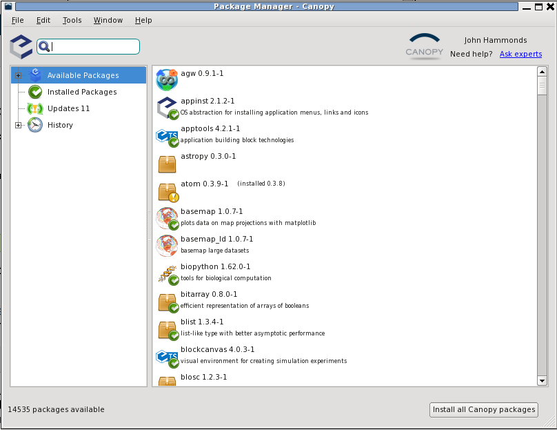

Installation of rsMap3D on Linux Host¶
These installation instructions assume the use of the Enthought Canopy Python distribution. We use Canopy for these instructions as it is the default Python environment used by the Advanced Photon Source at this time. For these instructions, Canopy 1.4.0 and the packages provided by Canopy were used as much as possible. The description written here was put together using a fresh Canopy install in order to provide as much information as possible for the beginning user.
In order to install run rsmMap3D the user will need to install Canopy, use the package manager to install/check the install of a number of other python packages and then install:
- xrayutilities from http://sourceforge.net/projects/xrayutilities
- pyspec from https://github.com/stuwilkins/pyspec
- And then download the source for rsMap3D from https://subversion.xray.aps.anl.gov/RSM/rsMap3D/trunk/
Installation and setup of Canopy¶
Enthought Canopy is a commercial bundling of Python. It is available from
In order to install Canopy (the “free version” will not work) the user will need to register for an account with Enthought. The Argonne has a subscription for Enthought Python. Argonne staff can register with their ANL e-mails and will get access to the full version. Academic licenses are also available. Academic users can request an academic license. Note that the Canopy Free version will not work on its own since rsMap3D requires VTK and this is not included with the Free version. Once you have an account, you can go to the Canopy web site, select Get Canopy and you should see something like the following.
With an authorized login, you should see the orange box near the to prompting you to download. Go to the Enthought page and download the Canopy distribution (canopy-1.4.0-full-rh5-64.sh as of this writing). To install this file first set the file as executable and then execute the script:
chmod +x canopy-1.4.0-full-rh5-64.sh
canopy-1.4.0-full-rh5-64.sh
Running this script you will be asked to accept the Canopy License agreement, select a director for installation (/local/Canopy was selected for this installation) and confirm the installation. Once the install is completed, you will need to launch the Canopy GUI to ensure that other packages needed are installed. Launch canopy with
/local/Canopy/canopy (we installed to /local/Canopy)
It will take a few minutes to set up the environment the first time. At the end of this initialization you will be prompted if you want to make Canopy your default Python environment. Answering yes here will add items to your login scripts to place Canopy and it’s associated python in your path. This will allow you to simply type python instead of needing to specify the path or adding this manually. After will present you with a window like the following. You will need to log in using the Enthought account used to download above.
Note also that after launching canopy, a user version of the python executable can be found at:
~/Enthought/Canopy_64bit/User/bin/python
Once logged in, press the Package Manager button. This will allow you to explore the installed packages and to install a number of other packages maintained by Enthought. An example of this is shown below.
Note that entering a package name in the upper left will search for a package. For rsMap3D we need to make sure that the following packages are installed: numpy, vtk, pytables and PyQt4. With Canopy 1.4.0 we see that
- numpy 1.8.0-1 is already installed
- PyQt 4.10.3-1 is available for installation
- vtk 5.10.1-1 is already installed
- pytables 2.4.0-5 is already installed
Make sure to install these packages now. Note that we will also need xrayutilities and pyspec (described below) but the version of these tools is older than the version being used to develop rsMap3D so we will download and install versions of these.
Installing xrayutilities¶
Xrayutilities is a package written by Dominik Kriegner and Eugen Wintersberger. We are presently using version 1.0.6 of xrayutilities. This package can be downloaded as a tar.gz file from http://sourceforge.net/projects/xrayutilities/.
To unbundle the package in /local/xrayutilities-1.0.6:
cd /local
tar -xzvf 'path to file'/xrayutilities-1.0.6.tar.gz
This package includes a setup.py file to help with the install. To install xrayutilities run:
cd /local/xrayutilities-1.0.6
~/Enthought/Canopy_64bit/User/bin/python setup.py install
Installing pySpec¶
pySpec is a python package written by Stuart Wilkins. We have been downloading the latest version of pyspec from the repository on github. To download into /local/pyspec:
cd /local
git clone https://github.com/stuwilkins/pyspec
Like xrayutilities, pyspec comes with a setup.py file to help with the installation. To install pyspec run:
cd /local/pyspec
~/Enthought/Canopy_64bit/User/bin/python setup.py install
Installing rsMap3D¶
Unlike the last two packages rsMap3D does not have a setup.py. It is currently installed in a directory, This directory is set in the PYTHONPATH and the application is run.
To install this package in /local/rsmap3d:
cd /local
svn co https://subversion.xray.aps.anl.gov/RSM/rsMap3D/trunk/ rsmap3d
We can now set the python path and run the application.
setenv PYTHONPATH /local/rsmap3d
~/Enthought/Canopy_64bit/User/bin/python -m rsMap3D.rsmEdit.
You will then see a window like the following:
..image:: Images/rsMap3DonLaunch2.png
You are now ready to start using rsMap3D.